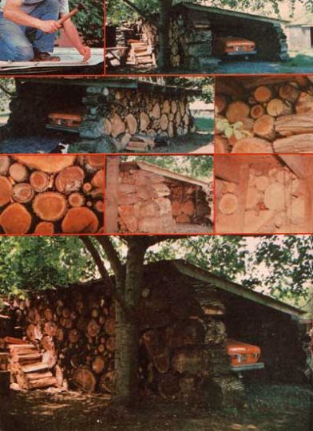

The "super-simple, extremely-low-cost, anybody-can-build-one" cordwood house has been around a long, long time. (Ken Kern, for instance, first featured the concept years ago in his excellent book, The Owner-Built Home ... and it was already an old, old idea then.)
But it wasn't until this magazine printed an article by New Brunswick's Jack Henstridge family ("We Built a $75,000 House ... For Only $10,000!", MOTHER NO. 45, pages 9699) that the idea really began to catch on in a big way. Since then, we've covered the concept again with a three-part article ("The Return of the Cordwood House", MOTHER NO. 47, pages 2934), the Henstridge family has published a construction manual on the subject, Jack has been asked to demonstrate and explain his building methods to several state and provincial governments and developmental groups in the United States and Canada, and dozens of do-it-yourself stackwood houses are already going up in a number of countries throughout the world.
Neverthelessas easy and as fast and as low-cost as a cordwood building is to fabricatewe know that there's a whole buncha good folks "out there" who still find the mere thought of actually putting up their own house with their own hands ... well, intimidating, to say the least. Maybe you even fall into that group yourself.
Well, OK. There ain't nothin' wrong with that. You just need to have your courage reinforced a little. And the best way to do that reinforcing is to turn yourself loose on a "somewhat similar but even simpler" building project. Something like the Hobbit Garage constructed a while back by Nancy and Mike Bubel up in Wellsville, Pennsylvania.
If you'd like to know even more about the Bubels, their down-to-earth recycling way of life, and this example of their handiwork in particular, you'll want to get a copy of their new book, Working Wood (Rodale Press, Inc., $3.95) available from any good bookstore or by mail from Mother's Bookshelf for $3.95 plus 75 cents shipping and handling.
NOW PLEASE NOTE: The construction principles used by the Henstridges and other stackwood builders are not the some as those illustrated in this article. In a "real" cordwood structure, short sections of log (and the "extra" pieces of insulation placed between them) are firmly embedded in a matrix of concrete ... to form a permanent, snug, wind- and waterproof wall. The Bubels, on the other hand, built the Hobbit Garage shown here simply by stacking their log ends up into a rough, threesided "Pile", and then adding a roof. The walls of their building contain no insulation and no concrete at all.
What this means, obviously, is that Mike and Nancy's Hobbit Garage is far less weatherproof and will have afar shorter use ful life than, say, the Henstridge family's stackwood house. But, as the Bubels explain, there are plenty of times such a "minimum" structure is all you really need to accomplish a particular purpose.
And, as already pointed out in this introduction, we (MOTHER's editors) are convinced that Mike and Nancy's Hobbit Garage has at least one more very important value: It's so bare-bones simple that absolutely anybody with enough strength and intelligence to stack chunks of wood can build it ... and, once you have a Hobbit Garage under your belt, you shouldn't find the construction of a "real" cordwood house intimidating at all!
The nice thing about using what's available to make what you need is that you often end up with a finished product that's absolutely unlike any other. A finished product which has a special vitalitya rightness for you and your placethat could never have come off an assembly line.
Take our garage, for example. When we bought the Pennsylvania farm we now live on, its only buildings were a house and a small shed. We didn't like the idea of leaving our car sitting out in all kinds of weather ... but we liked even less the idea of spending $5,000 on a "conventional" garage (we much preferred using that money to increase the fertility of our soil).
And so we banished dreams of a garage to the hidden depths of our minds while we pushed ahead with the improvement of our land. It wasn't until we had almost finished clearing the brush and trees from the site of our future pond, in fact, that thoughts of the building bobbed to the surface again ... and then, almost by accident.
The last tree to go from our minilake's bed was a humongous, willow with three massive trunks (each 20-24 inches in diameter). My husband, Mike, and a friend cut the tree down and sliced its logs into 20-inch-long chunks. We then rolled the rounds of willow up a log-supported ramp and onto a wagon so we could haul 'em to the house and split'em for firewood.
As it turned out, though, we never did burn those hunks of willow. Somewhere between the pond site and the house we began to think of the 20-inch-long sections of log as building blocks. And almost before we knew what we were doing, we were well on our way to using them for the construction of that garage we wanted. Oh, we stacked our "firewood" up in a pile all right ... but it turned out to be a three-sided pile (with a roof on top) that we could drive our car right into!
Since willow is not exactly the most rot-resistant of woods, we started our Hobbit Garage by laying down a base of long-lasting locust and cedar poles. No, we didn't actually pour a foundation or anything like that. Instead, we just laid down (parallel and side by side) enough of the poles to mark out three sides of our planned garage ... and then we began laying half-rounds of the biggest chunks of willow along the base of rotresistant cedar and locust.
After the first course of "building blocks" was in place, we continued up with the walls by fitting chunk after chunk of the willow together as tightly as possible. Naturally we used the largest pieces of wood first-on the lowest levels of the wallwhere it was easiest to set them in place. At that, some of the sections of log were outlandishly big ... and we'd never have gotten them into place without straining our backs if we hadn't had a couple of things going for us.
In the first place, willow is a very lightweight wood. (We'd never have been able to lift the same-sized chunks of oak, locust, or hickory.) And in the second place, we never lifted any piece of wood we could roll.
We rolled the biggest half-rounds of willowend over endinto position on the locust and cedar base. Then, using the first wedge-shaped chunk of the lowest course of willow half-rounds as a ramp, we rolled a second layer of slightly smaller willow rounds into place on the first. For succeeding courses (of still smaller chunks of wood), we simply built up and extended our (rather bumpy) ramp with additional rounds and halfrounds of the willow. This built-out "ramp", of course, was removed after we'd raised our garage's walls as high as we wanted them.
Our method of construction, while somewhat primitive, was really quite easy ... but not too easy. Occasional rounds of the willow would refuse to fall neatly into place between the chunks of the previous row (or would exhibit awkward "bumps" which made them hard to position), and we'd have to jimmy them to where we wanted them with a crowbar. Mostly, thoughas long as we wore sturdy work gloves and coordinated our timing ("1, 2, 3, roll! ") we found the job quite satisfying.
All of the main willow "building blocks" were sawed out 18 to 24 inches long (cut edge to cut edge) and were fitted together quite firmly without any mortar or nails. After all the big chunks of wood were in place, we went back and chinked in the gaps between them with lengths of smaller limbs and branches.
Our garage encloses a useful space measuring eight feet wide and 15 feet long. Its open side faces away from the prevailing west wind and its roof is pitched just enough (one side wall is 6'8" high and the other is 5'11") for good drainage.
We used a variety of smaller (two to eight inches in diameter) logs and sections of limb to even out the tops of our garage's walls. Then we laid 11 salvaged 2 X 6 rafters right across the stacks of willow (from one side wall to the other). These rafters are held firmly in place by a few vertical oak furring strips which are spiked to both the roofing supports and the cut faces of several of the logs in each side wall.
Mike nailed sheets of salvaged, 1/2 inch, exterior-grade plywood (which he scavenged from a wrecked building) across the rafters and then nailed some rolled black asphalt roofing over the plywood. The asphalt roofing and the nails are the only "boughten" materials in the whole garage.
We don't deny that our car's new home has a look "all its own" and we've never claimed the building will last forever (15 or 20 years seems a reasonable expectation). Still, our Hobbit Garage more than meets our immediate needs was constructed almost entirely from, "waste material" we had on hand ... cost us hardly any out-of-pocket money at all ... and was a lot of fun to build, It's weathered four winters so far and is beginning to look quite permanent.
In short, if you have more chunks of firewood lying around (or available for the cutting) than you have money ... and you need a garage, sheep hut, range shelter, woodshed, outhouse, or other outbuilding ... we think you'd be wise to at least consider the "quick and easy and inexpensive" method of construction used in our Hobbit Garage. And remember that you can always make one of these structures more weathertight in just a few minutes by hanging an old tarp or rug across its entrance.
You can also make the whole building a lot snugger by stacking firewood around its "permanent" walls. That's what we've done. And that's why our garage now looks even more like some strange, lovable structure from Middle Earth ... hunched, chunky, woody, and slightly lopsided. Sometimes, in factwhen the mist is swirling around it on a nippy morningwe can almost see Hobbits and Trolls huddled together under its funky wooden eaves.
|
 |
|
|